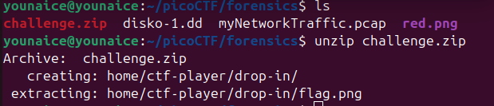
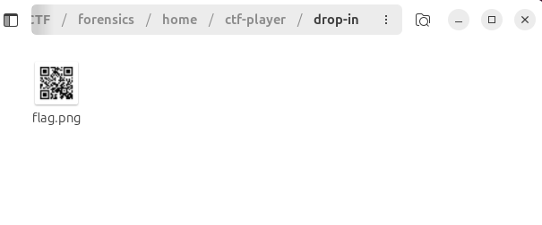
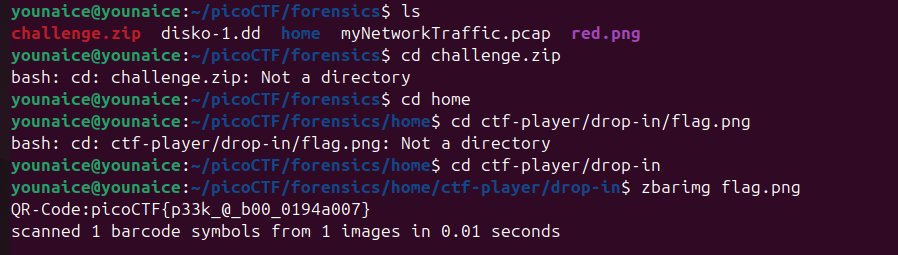

Challenge Description
I've gotten bored of handing out flags as text. Wouldn't it be cool if they were an image instead? You can download the challenge files here: challenge.zip The same files are accessible via SSH here: ssh -p 64325 ctf-player@atlas.picoctf.net Using the password 84b12bae. Accept the fingerprint with yes, and ls once connected to begin. Remember, in a shell, passwords are hidden!
Writeup Steps
-
Unzip the zip file given

A new folder is created
-
Check the content or file extracted in the folder, and there's a QR code

-
Can choose to scan the QR code using phone to get the flag.
We can also use the tools to get the flag. Get into the correct directory, then execute
zbarimgflag.pngWe got it!!
Flag
picoCTF{p33k_0_b00_0194a007}Conclusion
This challenge is a classic example of why input validation is critical.